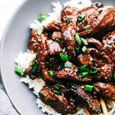

Mongolian Beef

Delicious Mongolian Beef Recipe
Ingredients
- 1lb Flank steak, sliced
- Vegetable Oil
- 1/4 cup Cornstarch
- 1/2 tsp ground white pepper
- Pinch of salt
- 1 bunch green onions
- 1 Tbsp ginger, finely chopped
- 2 red Fresno chiles, thinly sliced
- 2 tsp gochugaru (pepper flakes)
- 1/2 cup brown sugar
- 1/4 cup dark soy sauce
- 1/4 cup soy sauce
- 1/4 cup water
- Splash Rice Vinegar
- Thai Basil
- 5 Garlic cloves, finely chopped
- Green onions, thinly sliced
- Broccoli florets, optional
Directions
- Preheat oven to 425f
- Slice flank steak and add to a medium bowl.
- Break broccoli into separate florets onto a baking sheet lined with aluminum foil.
- Coat with oil and roast 425F until browned and lightly crisped.
- Season the wok with 3-4 tablespoons of vegetable oil over medium-high heat, swirling occasionally, until the oil begins to smoke. Discard that oil and wipe it out with a paper towel.
- Add another 3-4 tablespoons of oil and heat again over medium-high.
- While the oil heats, toss the beef together with cornstarch, ground white pepper, and a pinch of salt.
- Once the oil is hot, shake off the excess starch from the beef and shallow each piece of beef in batches for 2-3 minutes per side. Place to the side as they finish browning.
- Leave the heat on medium-high and add in green onions that have been cut into 2-inch segments. Sear for 30 seconds, toss and sear again until caramelization forms.
- Add in finely chopped ginger, thinly sliced Fresno chiles and gochugaru. Stir fry for 45 seconds.
- Add brown sugar, stir fry that in then add dark soy sauce, regular soy sauce, water, and a splash of rice vinegar. Let boil and reduce for 3 minutes.
- Add in the beef, and toss and stir to coat thoroughly.
- Turn off the heat and add in thai basil and finely chopped garlic. Stir to combine.